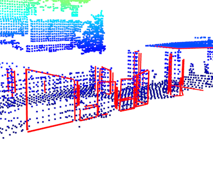
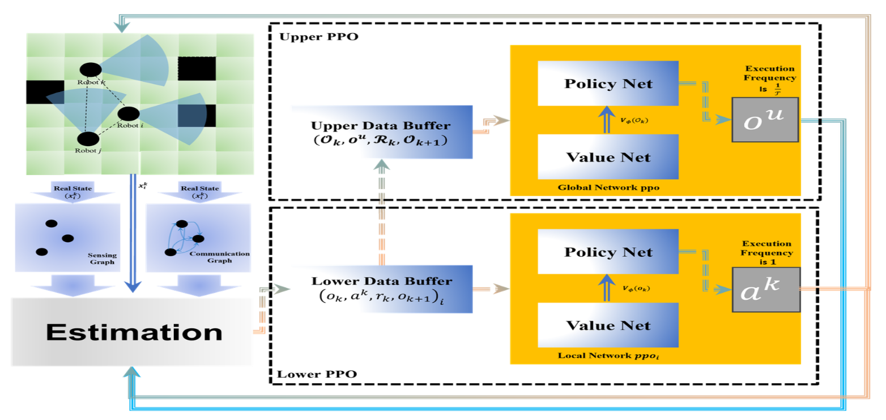
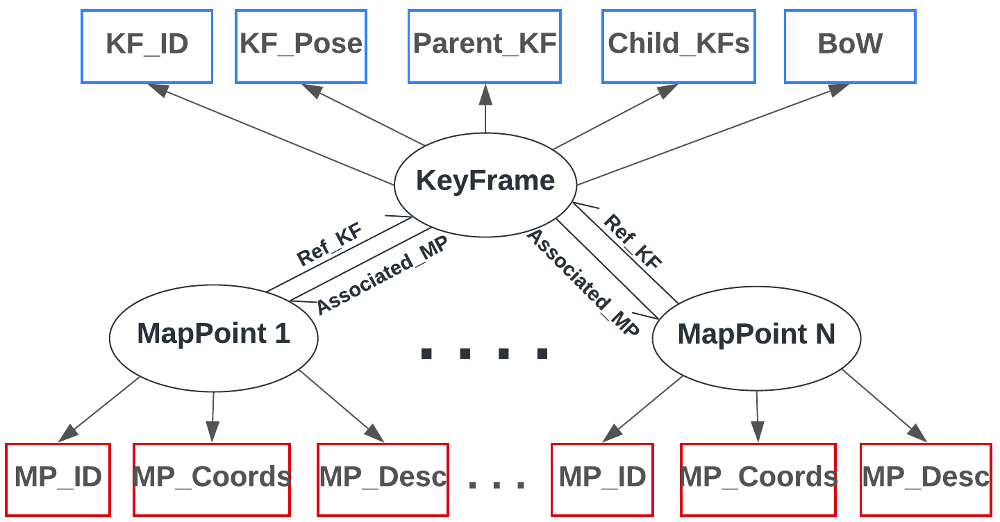
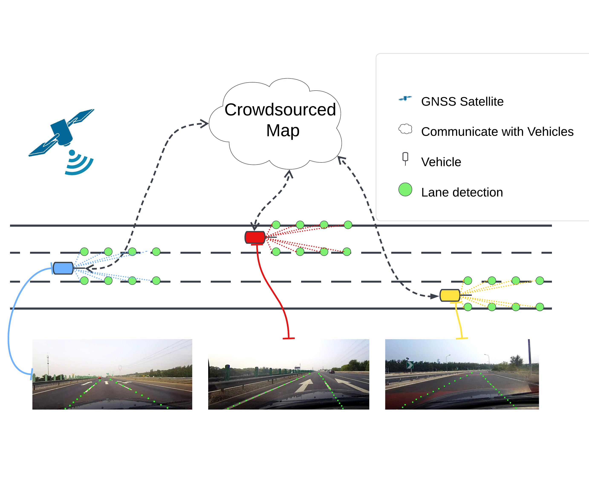
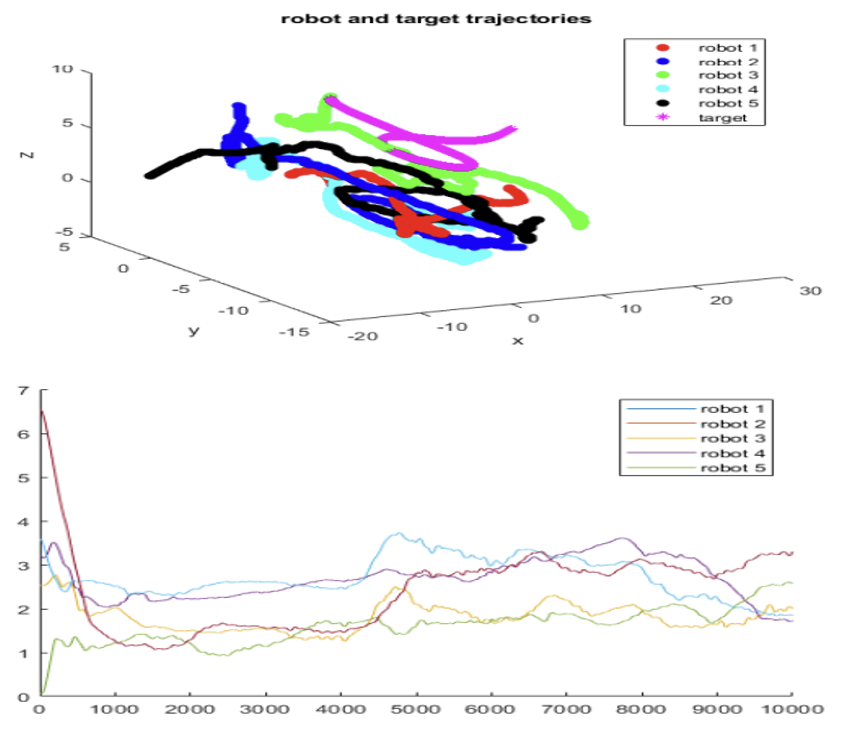
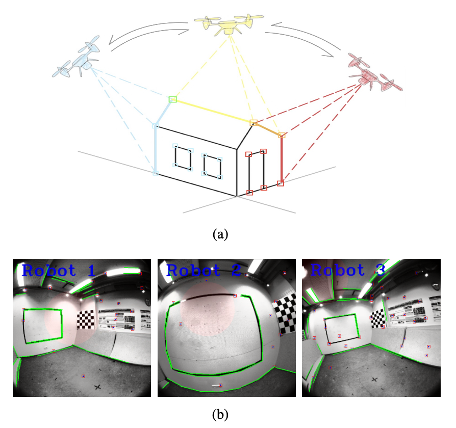
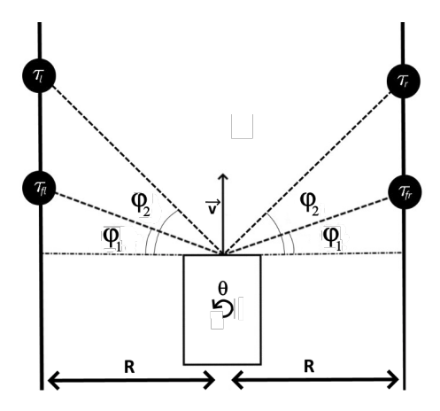
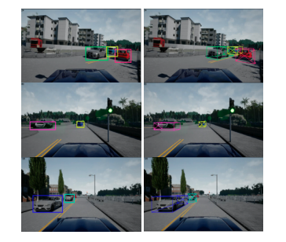
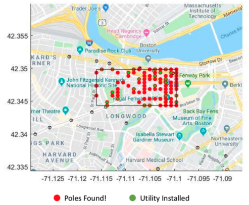
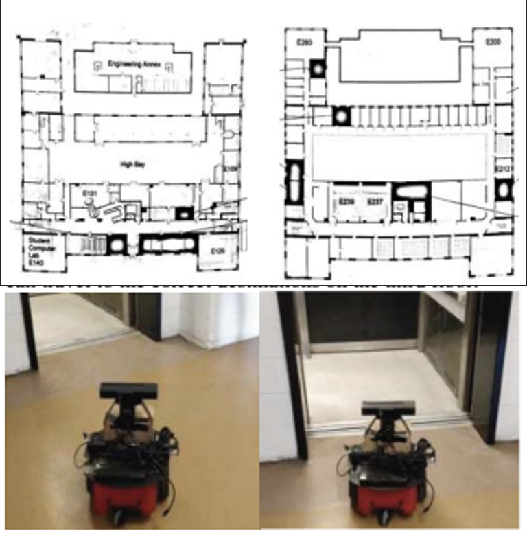

Publications
|  |
Y. Zhang, J. Xu, and W. Ren IEEE/RSJ International Conference on Intelligent Robots and Systems (IROS), 2025. [Under Review] |

|
Y. Zhang, D. Wang, J. Xu, M. Liu, P. Zhu, and W. Ren IEEE 21st International Conference on Automation Science and Engineering (CASE), 2025. [Under Review] |
|  |
J. Xu, D. Wang, Y. Zhang, and W. Ren IEEE Conference on Control Technology and Applications (CCTA), 2025. [Under Review] |
|  |
Y. Zhang, J. Yue, W. Ren, J. Chen, S. Krishnamurthy, and H. Qiu 22nd USENIX Symposium on Networked Systems Design and Implementation (NSDI), 2025. [Under Review] |
|  |
Y. Zhang, M. Greiff, W. Ren, and K.Berntorp American Control Conference (ACC), 2024. [Paper] [PDF] |
|  |
J. Xu, P. Zhu, Y. Zhang, and W. Ren IEEE Conference on Decision and Control (CDC), 2023. [Paper] |
|  |
Y. Zhang, P. Zhu, and W. Ren IEEE Conference on Control Technology and Applications (CCTA), 2023. [Paper] [arxiv] [Video] |
|  |
C. Boretti, P. Bich, Y. Zhang, and J. Baillieul IEEE International Conference on Robotics and Automation (ICRA), 2022. [Paper] [arXiv] [GitHub] |
|  |
Y. Zhang, J. Song, and S. Li IEEE International Conference on Electro Information Technology (EIT), 2021. [Paper] [GitHub] [Video] |
|  |
Y. Zhang, and O. Alshaykh IEEE International Conference on Electro Information Technology (EIT), 2020. [Paper] [arXiv] [GitHub] |
|  |
Y. Zhang, X. Wang, X. Wu, W. Zhang, M. Jiang and M. Al-Khassaweneh IEEE International Conference on Electro Information Technology (EIT), 2019. [Paper] [arXiv] [GitHub] |